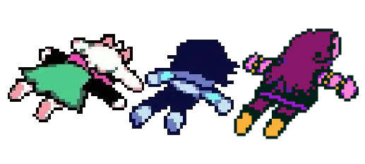

バーナム効果のるつぼ1997
Deltaruneの感想・考察・妄想の吹き溜まり
あなたは ------ 番目の来訪者です

― 新着 ―
Chapter1 取返し
一番最初のダークワールドでランサーに弾幕展開されている際にっ引き返してマップの端に行くと何かいる
Chapter2 取返し
何故か紫のドラゴンに執着しているアズリエルが気になるところ，アズリエルの趣味だとしたら色々もの申したくなってくる．
Chapter3 取返し
過去に一度でもクリアしたデータがあるとソファで二度寝することが出来るらしい
Chapter4 取返し
エンディングの曲の時に気付いたけど，そもそも章が始まるタイミングです出来変化し始めてる．
Chapter5
緑っぽくなってる！？
スージィ循環への帰結
Deltaruneの考察鯖や動画，2chからRedditまでありとあらゆる場所で考察や推測，妄想がされるゲームの中心たる人物『スージィ』